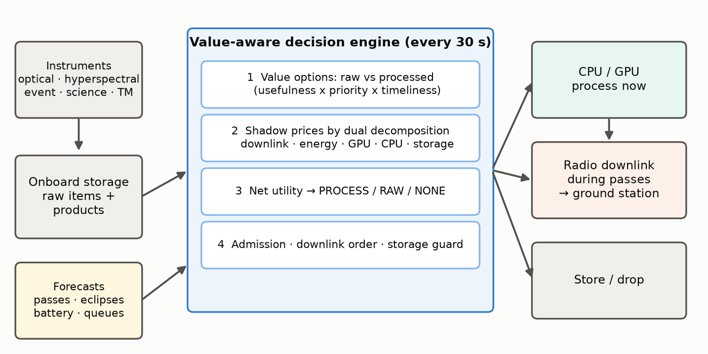

Earth-observation satellites acquire far more data than their ground contacts can return, and onboard processing can shrink data, filter useless acquisitions and cut latency, but it costs energy, compute time and storage while it waits. We treat the per-item choice between processing now, storing for later, transmitting raw and dropping as an online, multi-resource allocation problem with uncertain content usefulness and time-decaying value. We propose a value-aware decision engine that, every 30 s, prices five scarce resources (downlink volume, energy, GPU time, CPU time and storage) by dual decomposition over a forecast horizon of upcoming ground passes, and lets every item take the option with the best net value. Guards keep the battery reserve through the next eclipse and keep room in storage for incoming data, and each decision carries a one-line explanation. We release an open simulator and benchmark built on real orbit geometry: the Sentinel-2A orbit propagated from its current TLE with SGP4, passes over a Toulouse ground station and eclipses from the JPL ephemeris. Five scenarios make each resource binding in turn. Over 400 simulated days (5 scenarios × 4 strategies × 20 real days), the engine delivered the most value in four scenarios, beating both baselines on all 20 days, and tied the best baseline when storage was tightest. In those four scenarios it captured 3–21 % more value than a hand-tuned rule set and 6–59 % more than processing everything. It used 2–35 % less discretionary energy than both processing baselines. In an energy-starved configuration it kept a mean lowest battery charge of 35 %, while the process-everything strategy fell to 4 %. The ranking is unchanged under a synthetic geometry. An ablation study shows where the gains come from. Re-valuing raw transmissions at their downlink-queue position contributes most. Shadow prices matter most when storage binds, and the battery guard keeps the charge above its reserve. We discuss the limits of this partly synthetic evaluation and the planned next steps.
A small Earth-observation satellite in low Earth orbit can easily generate on the order of a hundred gigabytes per day, while a single ground station offers a few passes of a few minutes each. Downlink volume is therefore the classic bottleneck. The usual answer, recording everything and dumping as much as possible at each pass ("bent-pipe"), wastes the scarce downlink on data that is later found useless: cloudy scenes, false alarms, redundant measurements. It also delays time-critical information by hours.
Onboard processing changes this trade-off. A cloud-screening network or an event detector running on an onboard accelerator can discard useless data, compress useful data into small products and deliver urgent alerts at the next pass. Flight demonstrations such as Φ-Sat-1 [1] have shown that deep-learning inference onboard is feasible. However, processing is not free. It draws power that the solar array can only supply in sunlight, it occupies a scarce GPU or CPU, and data waiting to be processed or transmitted occupies finite mass memory. A satellite must therefore decide, continuously and autonomously, what to process, when, and what to send. It does so under energy, compute, memory, storage, bandwidth and contact-window constraints, and without knowing in advance which data is useful.
This interim paper addresses Problem 1 of the IASTAM challenge: how can the system decide automatically, for each piece of data or task, whether it is preferable to process it immediately onboard, store it for later processing, or transmit it to the ground? Our contributions are:
Onboard processing and autonomy. Autonomous science agents have flown for two decades. The EO-1 Autonomous Science Agent detected events onboard and re-planned acquisitions and downlinks [2]. Φ-Sat-1 demonstrated onboard deep-learning cloud detection that discards cloudy images before downlink [1]. Orbital edge computing studies how constellations of nanosatellites should process data in orbit when energy and contact time are limited [3]. These works establish that onboard processing is valuable. Our focus is the resource-allocation policy deciding, item by item, when processing pays off.
Satellite scheduling. Observation and downlink scheduling for agile satellites is usually solved offline on the ground, with heuristics, local search or exact methods over selection-and-sequencing formulations [4]. Such plans are typically computed on the ground and uplinked. We instead target an onboard, online policy that re-plans every step from local state and predictable forecasts.
Shadow prices and decomposition. Pricing constrained resources with Lagrange multipliers dates back to Everett's generalized Lagrange multiplier method for resource allocation [5]. Its decomposition interpretation underlies network utility maximization and congestion pricing [6, 7]. The per-step problem we face generalizes the multiple-choice knapsack problem [8]. Re-solving it at every step from the current state and forecasts follows the receding-horizon principle of model predictive control [9]. To our knowledge, combining these tools into an explainable onboard process-store-transmit engine, together with an open benchmark for it, has not been reported.
Time is discretized into decision steps of Δt = 30 s over a 24 h horizon.
Orbit geometry (real). The spacecraft flies the orbit of Sentinel-2A: 786 km, sun-synchronous, 100.6-min period. We propagate its two-line element set (TLE) of 26 September 2026, obtained from CelesTrak [13], with SGP4 [11] using the skyfield library [10], over 62 days at a 10 s resolution.
Resources and data (illustrative). The satellite carries a battery charged by a solar array only in sunlight and drained by a constant platform load. Processing runs on 4 CPU cores and one GPU slot sharing 8 GB of RAM. A 32 GB mass memory holds raw data and products, and a radio transmits during passes. These are illustrative orders of magnitude for a small EO satellite and are varied across scenarios (Table 1).
| Scenario | Solar | Battery | Storage | Passes/day | Downlink | What binds |
|---|---|---|---|---|---|---|
| Nominal | 60 W | 80 Wh | 32 GB | 4.4 (≥ 10°) | 10 MB/s | Sentinel-2A orbit (real TLE, 786 km SSO) seen from Toulouse: ~4.4 passes/day, ~21 GB/day downlink. |
| Energy-starved | 46 W | 60 Wh | 32 GB | 4.4 (≥ 10°) | 10 MB/s | Degraded solar array and smaller battery: processing everything is not affordable. |
| Downlink-starved | 60 W | 80 Wh | 32 GB | 3.0 (≥ 20°) | 5 MB/s | Fewer usable passes and half the data rate: bandwidth is the bottleneck. |
| Storage-tight | 60 W | 80 Wh | 8 GB | 4.4 (≥ 10°) | 10 MB/s | Only 8 GB of mass memory: storing raw data for later is expensive. |
| Event surge | 60 W | 80 Wh | 32 GB | 4.4 (≥ 10°) | 10 MB/s | Crisis mode: 5x more time-critical event candidates (e.g. wildfire season). |
Table 1. Benchmark scenarios. Each stresses a different resource. Passes per day are real averages over 62 days for the given elevation mask. All other parameters are nominal: 22 W platform load, CPU 4 × 5 W, GPU 1 × 35 W, radio 20 W, 30 % battery reserve, 10 % hard floor.
Instruments generate items of five types (Table 2). Arrivals follow a Poisson process, and optical instruments acquire only on the day side. Each item i has an acquisition time ti, a size si, a base value bi (its priority in the mission plan) and an onboard estimate pi of the probability that its content is useful. The true usefulness ui ∈ {0, 1} is hidden: a scene may turn out cloudy, an event candidate a false alarm. Onboard processing reveals ui. Useless items are discarded onboard; useful items become a product of size ρk si that keeps a fraction ηk of the value. Raw data keeps full value but must be processed on the ground, which adds a delay gk.
| Data type | Raw MB | Base value | Per orbit | Half-life / deadline | P(useful) | Processing | Product ratio | Retention | Ground delay |
|---|---|---|---|---|---|---|---|---|---|
| optical image | 300 | 10 | 12 | 6 h / 36 h | 0.6 | GPU 90 s | 0.12 | 0.8 | 1 h |
| hyperspectral cube | 800 | 16 | 3 | 12 h / 48 h | 0.8 | GPU 240 s | 0.08 | 0.6 | 2 h |
| event candidate | 40 | 30 | 6 | 1 h / 6 h | 0.3 | CPU 10 s | 0.025 | 1 | 0.5 h |
| science log | 10 | 1.5 | 12 | 24 h / 72 h | 0.9 | CPU 15 s | 0.3 | 0.95 | 1 h |
| telemetry | 1 | 1 | 19 | 1 h / 6 h | 1 | – | – | – | 0 h |
Table 2. Nominal data types. Per-item size varies by ±20 % and base value by ±50 %. pi ~ Beta around the type mean, and ui ~ Bernoulli(pi).
Value is realized only when data reaches the ground and becomes usable. With L the latency, hk the half-life and Dk the deadline of the item's type, the timeliness factor is
A raw item delivered at time τ is worth bi δk(τ − ti + gk) if it is useful. If it is not useful, it is worth a residual fraction jk of that, which is small for a cloudy image and zero for a false alarm. A processed product delivered at τ is worth bi ηk δk(τ − ti). Before processing, the engine only knows the expectations:
The ideal value of an item, bi if useful and bi jk otherwise, assumes instant delivery with unlimited resources. It normalizes the score. It is not attainable, because many urgent events occur hours before the next pass.
The goal is to maximize the total delivered value over the mission. At every step the engine assigns each onboard item one of four routes: PROCESS_NOW, STORE (keep for later processing or transmission), TRANSMIT (downlink raw data or a finished product) or DROP. The simulator enforces all physical constraints regardless of what a policy asks for:
Even with perfect foresight the per-step problem generalizes the multiple-choice knapsack problem [8], and arrivals and usefulness are unknown in advance. We therefore seek a fast online policy.
Figure 1 summarizes the engine. At every step it performs the following operations on the current onboard state and the forecasts. The forecasts are pass and eclipse times, which are predictable from orbit propagation, plus battery and queue state.

For each raw item, the engine estimates the delivery time of each option. Raw data goes out at the next downlink opportunity. A product is delivered at the first pass after its processing would finish. The engine converts these times into E[Vraw] and E[Vproc] using the value model. Each option consumes a vector of resources ai,r(o):
Products already in storage have only a transmit option. Items whose expected value has fallen below 0.1 % of their base value are marked worthless and dropped, because they cannot reach the ground before their deadline.
Given a price λr ≥ 0 per unit of resource r, each item independently takes the option with the best net utility:
This is the Lagrangian relaxation of the coupled allocation [5, 6]. For each resource, the engine forecasts a supply Sr over a planning horizon ending with the K-th upcoming pass (K = 2):
It then raises each price by coordinate-wise geometric bisection, in two rounds over the five resources, until planned use fits supply:
A price stays at zero while its resource is plentiful. In particular, energy is free when the battery is full in sunlight, because unused solar power would be wasted. A price rises to the value density of the marginal item when its resource binds. This explains why the engine processes aggressively in sunlight and sends raw data when bandwidth is spare, but switches to compact products when passes are saturated or storage is tight.
The first pass assumes that every raw item leaves at the start of the next pass, which is optimistic when the queue is long. The engine therefore sorts the items routed to RAW by value density. It computes each item's actual completion time from the cumulative volume ahead of it and the pass schedule, re-values the item at that time, and solves the prices a second time.
Items routed to PROCESS start immediately, in order of utility gain per processing second, if three conditions hold:
Otherwise the item is stored for later processing. During a pass, items routed to RAW (raw data or products) are sent in decreasing order of
This is value per MB plus an urgency term: the value lost by waiting for the next pass. A storage guard keeps free space for five minutes of peak acquisition, and at least 5 % of capacity. When space runs short it drops the raw items with the lowest net value per MB.
Every decision carries a one-line explanation generated from the quantities above, together with the current prices. Verbatim examples from the seed-7 replays:
The per-step computation is dominated by the bisection: at most a few hundred vectorized evaluations over the n onboard items. Measured on one laptop core in pure Python/NumPy over 14,400 decisions (seed 7, all five scenarios), a decision takes 1.2 ms on average, 2.8 ms at the 95th percentile and at most 8 ms, with up to 277 items onboard. That is more than three orders of magnitude below the 30 s decision period.
Simulator. The simulator is discrete-time and seeded. It keeps all state in immutable objects, and it alone holds the hidden usefulness truth. It enforces every hard constraint, so policies cannot cheat. For a given seed every strategy faces exactly the same real day of passes and eclipses and the same data. The geometry is precomputed once (satsched.cli geometry) and stored with its provenance (TLE, station, mask, ephemeris), so experiments do not need skyfield.
Baselines.
- Static priority classes: events, then telemetry, then hyperspectral, then optical, then science. - Battery thresholds for processing: events always; optical and hyperspectral above 50 %; science above 70 %. - Leftover pass capacity filled with raw data by priority. - Drop low-priority items above 90 % storage.
Metrics. Each of the five evaluation criteria of the challenge maps to measured quantities:
Protocol. Engine parameters were tuned only on seeds 1000–1003, which are real days 24–27 and never overlap the evaluation days. All reported results use seeds 0–19: 20 real days per scenario and strategy, 400 simulated days in total. We report means with 95 % confidence intervals. Because every strategy sees the same days, we also report paired differences. As a robustness check, we repeated the whole benchmark with a synthetic geometry (Section 6.6).
Table 3 and Figure 2 give the main results. The value-aware engine captures the most value in four of the five scenarios and ties the best baseline in the fifth. The margin over the strongest baseline, the hand-tuned rules, varies by scenario:
Bent-pipe captures only 1–11 %: without onboard filtering, the downlink is spent on cloudy scenes and false alarms, storage overflows and urgent data expires.
| Scenario | Strategy | Value % | Completed % | Energy Wh | Min battery % | Latency min | Alert lat. min | Downlink % | Peak storage % |
|---|---|---|---|---|---|---|---|---|---|
| Nominal | Value-aware (ours) | 43.6±1.2 | 79.4±1.0 | 197±6 | 75±2 | 228±7 | 140±12 | 99±0 | 39±1 |
| Priority rules | 41.1±1.2 | 84.7±0.9 | 253±6 | 74±3 | 205±6 | 140±12 | 29±1 | 13±1 | |
| Process-all | 40.7±1.2 | 84.6±1.0 | 253±6 | 74±3 | 205±7 | 145±13 | 28±1 | 13±1 | |
| Bent-pipe | 5.2±0.3 | 12.9±0.7 | 12±0 | 76±2 | 878±22 | nan±nan | 100±0 | 100±0 | |
| Energy-starved | Value-aware (ours) | 43.3±1.2 | 79.3±1.0 | 195±5 | 35±4 | 229±7 | 140±12 | 99±0 | 40±2 |
| Priority rules | 41.0±1.3 | 82.6±1.9 | 224±2 | 25±2 | 250±21 | 140±12 | 68±9 | 27±4 | |
| Process-all | 27.2±3.5 | 64.4±5.7 | 251±6 | 4±4 | 223±13 | 150±15 | 19±2 | 16±1 | |
| Bent-pipe | 5.2±0.3 | 12.9±0.7 | 12±0 | 70±2 | 878±22 | nan±nan | 100±0 | 100±0 | |
| Downlink-starved | Value-aware (ours) | 33.2±1.6 | 64.1±2.0 | 250±7 | 74±2 | 249±9 | 158±11 | 100±0 | 17±1 |
| Priority rules | 27.6±2.7 | 66.0±4.5 | 256±6 | 74±3 | 290±21 | 159±11 | 98±1 | 14±1 | |
| Process-all | 25.3±2.6 | 68.1±4.3 | 256±6 | 74±3 | 350±33 | 234±19 | 98±2 | 14±1 | |
| Bent-pipe | 1.1±0.1 | 3.2±0.4 | 6±0 | 76±2 | 1010±41 | nan±nan | 100±0 | 100±0 | |
| Storage-tight | Value-aware (ours) | 41.0±1.2 | 77.5±1.0 | 166±6 | 76±2 | 227±7 | 140±12 | 98±1 | 94±0 |
| Priority rules | 41.1±1.2 | 84.7±0.9 | 253±6 | 74±3 | 205±6 | 140±12 | 29±1 | 53±3 | |
| Process-all | 40.7±1.2 | 84.6±1.0 | 253±6 | 74±3 | 205±7 | 145±13 | 28±1 | 52±3 | |
| Bent-pipe | 11.1±0.5 | 32.4±1.5 | 12±0 | 76±2 | 355±10 | 200±13 | 100±0 | 100±0 | |
| Event surge | Value-aware (ours) | 31.1±1.3 | 75.7±1.3 | 206±7 | 74±2 | 213±7 | 143±6 | 99±1 | 39±1 |
| Priority rules | 30.2±1.3 | 85.0±0.8 | 260±7 | 73±3 | 194±6 | 143±6 | 32±1 | 13±1 | |
| Process-all | 29.3±1.2 | 84.8±0.8 | 261±7 | 73±3 | 196±7 | 148±7 | 29±1 | 13±1 | |
| Bent-pipe | 2.0±0.1 | 8.7±0.4 | 12±0 | 76±2 | 882±24 | nan±nan | 100±0 | 100±0 |
Table 3. Benchmark results: mean ± 95 % CI over 20 seeds. "Energy" is discretionary energy (processing + radio) per day. "Alert lat." is the mean latency of true event alerts.
Because all strategies face identical passes and data for a given seed, paired differences are much tighter than the across-seed intervals of Table 3. In four scenarios the engine beats both processing baselines on every one of the 20 days, and all their paired 95 % confidence intervals exclude zero (Table 4). In the storage-tight scenario the paired differences are −0.11 ± 0.42 points against the rule set and +0.30 ± 0.48 against process-all: statistical ties.
| Scenario | Δ vs priority rules (pts) | Wins | Δ vs process-all (pts) | Wins |
|---|---|---|---|---|
| Nominal | +2.47 ± 0.19 | 20/20 | +2.89 ± 0.24 | 20/20 |
| Energy-starved | +2.35 ± 0.45 | 20/20 | +16.14 ± 3.40 | 20/20 |
| Downlink-starved | +5.66 ± 1.47 | 20/20 | +7.94 ± 1.49 | 20/20 |
| Storage-tight | -0.11 ± 0.42 | 10/20 | +0.30 ± 0.48 | 13/20 |
| Event surge | +0.82 ± 0.12 | 20/20 | +1.77 ± 0.51 | 20/20 |
Table 4. Paired comparison against the two strongest baselines over the 20 shared seeds: mean difference in value captured (percentage points, ± 95 % CI) and the number of seeds on which the value-aware engine is better.
The engine spends 2–35 % less discretionary energy than the processing baselines (Figure 3). The saving is small only under downlink starvation, where every strategy must process almost everything. It processes only where processing adds value: it filters and compresses when bandwidth or storage is scarce, and sends raw data when passes have spare capacity. Its battery guard also defers any job that would push the charge below the reserve before the next sunrise. In the energy-starved scenario the difference is qualitative (Figure 4):


The engine delivers the largest share of items in all five scenarios: 65.0 % vs 63.5 % on average in the nominal case (Figure 5 shows one day). No item expires onboard. Its completion rate (delivered + filtered onboard) is nevertheless 2–9 points lower than the rule set's in every scenario: 79.4 % vs 84.7 % in the nominal case. It is higher than process-all's only when energy-starved (79.3 % vs 64.4 %). There are two reasons:
We report this trade-off explicitly because completion is one of the challenge's criteria. A mission that rewards completion itself can raise its weight in the value model. Urgent-alert latency equals the rule set's: 140 min in the nominal case, and 158 vs 159 min under downlink starvation, against 234 min for process-all. The engine uses 98–100 % of pass capacity, against 19–98 % for the processing baselines. The cost is more data held in storage: a peak of 39 % vs 13 % in the nominal case.

Table 5 removes one component at a time, evaluated on the same 20 seeds.
| Variant | Nominal | Energy-starved | Downlink-starved | Storage-tight | Event surge | Below reserve % (energy-starved) |
|---|---|---|---|---|---|---|
| Full engine | 43.6±1.2 | 43.3±1.2 | 33.2±1.6 | 41.0±1.2 | 31.1±1.3 | 1.1 |
| No shadow prices (all λ = 0) | 43.5±1.2 | 43.2±1.2 | 32.6±1.6 | 38.3±1.2 | 31.0±1.3 | 0.9 |
| No storage price | 43.6±1.2 | 43.3±1.2 | 33.2±1.6 | 38.3±1.2 | 31.1±1.3 | 1.1 |
| No queue-aware re-valuation | 42.2±1.1 | 41.9±1.1 | 32.7±1.5 | 38.7±1.2 | 30.5±1.3 | 1.3 |
| No battery guard | 43.6±1.2 | 43.2±1.2 | 33.2±1.6 | 41.0±1.2 | 31.1±1.3 | 3.2 |
Table 5. Ablation: value captured (%, mean ± 95 % CI), and the time below the battery reserve in the energy-starved scenario.
Three findings stand out, all from paired runs on identical days.
With prices set to zero, the engine reduces to an explicit expected-value comparison with guards, which already beats the heuristics in most scenarios. The energy price rarely becomes positive, because the planning horizon spans several orbits of solar harvest. Short-term energy scarcity is handled by the battery guard instead. A shorter energy horizon is a natural refinement.
On the tuning seeds, we varied the planning horizon (K ∈ {2, 3, 5} passes), the storage guard (300 or 900 s of peak acquisition) and the urgency weight (wu ∈ {0, 1}). On the real geometry, the average value across the five scenarios stayed within 37.1–37.4 % for all 12 combinations, a spread of 0.31 points. The defaults are within 0.01 points of the best combination (tools/sensitivity.py). On the synthetic geometry, varying the worthless-item threshold (1 %, 0.1 % or 0) changed value by at most 0.1 points. The engine therefore does not depend on fine-tuning. Its behaviour comes from explicit valuation and prices that adapt automatically to each scenario.
Before adopting the real orbit, we ran the identical benchmark on a synthetic geometry, with the same seeds, engine and baselines. It used a 95-min orbit with fixed 35-min eclipses and two clusters of three passes per day, giving 29 GB/day of downlink. Table 6 gives the value captured. The engine ranked first in all five synthetic scenarios, including storage-tight (41.5 % vs 40.6 %), with gains of 2–14 % over the rules. The real geometry has fewer and irregular passes (21.5 GB/day). It widens the engine's advantage when the downlink binds and narrows it when storage binds. The qualitative conclusions do not depend on the geometry.
| Strategy | Nominal | Energy-starved | Downlink-starved | Storage-tight | Event surge |
|---|---|---|---|---|---|
| Value-aware (ours) | 43.3±1.6 | 42.8±1.6 | 34.6±1.6 | 41.5±1.7 | 34.4±1.3 |
| Priority rules | 40.6±1.6 | 37.6±2.0 | 33.2±2.1 | 40.6±1.6 | 33.4±1.4 |
| Process-all | 40.2±1.6 | 33.8±4.7 | 31.8±2.1 | 40.2±1.6 | 32.9±1.3 |
| Bent-pipe | 10.3±1.1 | 10.3±1.1 | 2.7±0.4 | 16.1±1.3 | 4.5±0.7 |
Table 6. Value captured (%, mean ± 95 % CI over 20 seeds) with the synthetic geometry.
What is real and what is not. The orbit, passes and eclipses are real (Sentinel-2A over Toulouse). Satellite resources, workload and value parameters are plausible orders of magnitude, not a specific mission. The ranking of strategies was stable across five scenarios and two geometries, but absolute numbers should not be over-interpreted.
Value model. The value model (priority × usefulness × exponential timeliness decay) is an assumption. It is also the lever through which operators would express mission priorities. The engine is agnostic to its exact form: any function of delivery time can be used.
Forecasts. The engine's pass and eclipse forecasts come from the same propagated orbit, so they are exact. In operations, TLE-based predictions drift by seconds to minutes over days. SGP4 errors also grow across our 62-day span, which affects the timing of individual later days but not the statistics of the pass geometry. Link outages, elevation-dependent data rates and battery ageing are not modelled.
Optimality. The prices come from two coordinate-wise rounds, an approximate dual solution. Planned use can therefore slightly exceed a forecast supply, but the simulator still enforces every hard limit. We compare against heuristics, not yet against an optimum. A hindsight mixed-integer program on reduced instances would bound the optimality gap. It is the first item of our future work.
Completion metric. The engine optimizes value, not item counts. Section 6.3 explains the resulting completion trade-off.
Onboard cost. The engine costs about 1 ms per step on a laptop core. On a flight processor it would be slower, but the 30 s period leaves ample margin, and the computation is vectorized and allocation-light.
Valuing every option explicitly, pricing the resources that bind, and guarding battery and storage is a simple, explainable and effective way to decide onboard whether to process, store or transmit. On a benchmark built on Sentinel-2A's real orbit, it beats a hand-tuned rule set and process-everything on every day in four of the five scenarios, and ties them when storage is tightest. It uses markedly less energy and protects the battery when energy is scarce. Before the final submission we plan to:
Code, dataset, dashboard and all results are available in the project repository.
[1] G. Giuffrida et al., "The Φ-Sat-1 Mission: The First On-Board Deep Neural Network Demonstrator for Satellite Earth Observation," IEEE Transactions on Geoscience and Remote Sensing, vol. 60, 2022.
[2] S. Chien et al., "The EO-1 Autonomous Science Agent," in Proc. 3rd Int. Joint Conf. on Autonomous Agents and Multiagent Systems (AAMAS), 2004.
[3] B. Denby and B. Lucia, "Orbital Edge Computing: Nanosatellite Constellations as a New Class of Computer System," in Proc. ASPLOS, 2020.
[4] M. Lemaître, G. Verfaillie, F. Jouhaud, J.-M. Lachiver and N. Bataille, "Selecting and scheduling observations of agile satellites," Aerospace Science and Technology, vol. 6, no. 5, 2002.
[5] H. Everett III, "Generalized Lagrange Multiplier Method for Solving Problems of Optimum Allocation of Resources," Operations Research, vol. 11, no. 3, 1963.
[6] D. P. Palomar and M. Chiang, "A Tutorial on Decomposition Methods for Network Utility Maximization," IEEE Journal on Selected Areas in Communications, vol. 24, no. 8, 2006.
[7] F. P. Kelly, A. K. Maulloo and D. K. H. Tan, "Rate control for communication networks: shadow prices, proportional fairness and stability," Journal of the Operational Research Society, vol. 49, 1998.
[8] H. Kellerer, U. Pferschy and D. Pisinger, Knapsack Problems, Springer, 2004.
[9] D. Q. Mayne, J. B. Rawlings, C. V. Rao and P. O. M. Scokaert, "Constrained model predictive control: Stability and optimality," Automatica, vol. 36, no. 6, 2000.
[10] B. Rhodes, "Skyfield: High precision research-grade positions for planets and Earth satellites generator," Astrophysics Source Code Library, ascl:1907.024, 2019.
[11] D. A. Vallado, P. Crawford, R. Hujsak and T. S. Kelso, "Revisiting Spacetrack Report #3," in Proc. AIAA/AAS Astrodynamics Specialist Conference, AIAA 2006-6753, 2006.
[12] W. M. Folkner, J. G. Williams and D. H. Boggs, "The Planetary and Lunar Ephemeris DE 421," IPN Progress Report 42-178, NASA Jet Propulsion Laboratory, 2009.
[13] CelesTrak, current GP element sets (TLE) for NORAD 40697 (SENTINEL-2A), https://celestrak.org, retrieved 26 September 2026.
The full pipeline runs with the commands below.
python -m satsched.cli geometry (Sentinel-2A TLE in data/orbit/)python -m pytest --covpython tools/sensitivity.pypython -m satsched.cli bench --seeds 20python -m satsched.cli ablation --seeds 20python -m satsched.cli dataset --seeds 3python -m satsched.cli figurespython tools/build_paper.pyAll randomness is seeded. Each strategy sees identical passes and data for a given seed. Per-run metrics are in results/runs.csv and results/ablation_runs.csv.